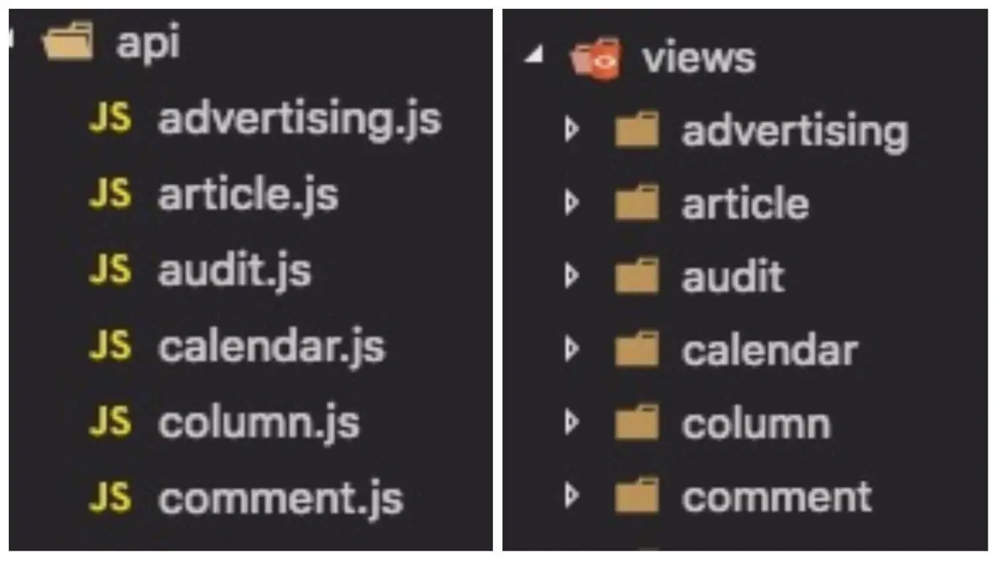
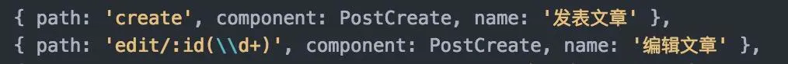

Vue Element Admin Inbox
Table of Contents
→ 项目文档 https://panjiachen.gitee.io/vue-element-admin-site/zh/
前序准备（基础篇）
如何从零构建一个完整的管理后台项目？
目录结构
1.api 和 views
随着业务的迭代，模块会越来越多。建议根据业务模块来划分 views，并且 将 views 和 api 两个模块一一对应，从而方便维护。
当然也有一些全区公用的 api 模块，如七牛 upload，remoteSearch 等等，这些单独放置就行。
2.components
这里的 components 放置的都是全局公用的一些组件，如上传组件，富文本等等。一些页面级的组件建议还是放在各自 views 文件下，方便管理。
3.store
建议不要为了用 vuex 而用 vuex。当然有些数据还是需要用 vuex 来统一管理的，如登录 token，用户信息，或者是一些全局个人偏好设置等，还是用 vuex 管理更加的方便，具体当然还是要结合自己的业务场景的。
webpack
1.jquery
管理后台不同于前台项目，会经常用到一些第三方插件，但有些插件是不得不依赖 jquery 的，直接引入到项目中省事。但如果第三方库的代码中出现
则会直接报错。
需要使用 webpack 内置的 ProvidePlugin 插件，配置很简单，只需要：
1: new webpack.ProvidePlugin({ 2: $: 'jquery' , 3: 'jQuery': 'jquery' 4: }) 5:
这样当 webpack 碰到 require 的第三方库中出现全局的 $、jQeury和window.jQuery 时，就会使用 node_module 下 jquery 包 export 出来的东西了。
2.alias
当项目逐渐变大之后，文件与文件直接的引用关系会很复杂，这时候就需要使用 alias 了。
有的人喜欢 alias 指向 src 目录下，再使用相对路径找文件：
1: resolve: { 2: alias: { 3: '~': resolve(__dirname, 'src') 4: } 5: } 6: 7: // 使用 8: import stickTop from '~/components/stickTop'
ESLint
每个人和团队都有自己的代码规范，统一就好了，去打造一份属于自己的 eslint 规则上传到 npm 吧，如饿了么团队的 config ，vue 的 config。
*这里提供了一份我平时的 eslint 规则地址，都简单写上了注释。
更多请参考 vscode 插件和配置推荐。
封装 axios
我们经常遇到一些线上 的 bug，但测试环境很难模拟。其实可以通过简单的配置就可以在本地调试线上环境
……
多环境
vue-cli 默认只提供了 dev 和 prod 两种环境。但其实正真的开发流程可能还会多一个 sit 或者 stage 环境，就是所谓的测试环境和预发布环境。所以我们就要简单的修改一下代码。其实很简单就是设置不同的环境变量：
"build:prod": "NODE_ENV=production node build/build.js", "build:sit": "NODE_ENV=sit node build/build.js",
新版的 vue-cli 也内置了 webpack-bundle-analyzer 一个模块分析的东西，相当的好用，可以研究下。
前后端交互
1.跨域问题
首先前后端交互不可避免的就会遇到跨域问题，我司现在全是用 CORS 来解决的，如果你司后端嫌麻烦不肯配置的话， dev 环境也可以通过 webpack-dev-server 的 proxy 来解决，开发环境用 nginx 反代理一下就好了，具体配置这里就不展开了。
2.交互问题
平时的开发中交流成本占据了我们很大一部分时间，但前后端如果有一个好的协作方式的话能解决很多时间。
我司开发流程都是前后端和产品一起开会讨论项目，之后后端根据需求，首先定义数据格式和 api，然后 mock api 生成好文档，我们前端才是对接接口的。
这里推荐一个文档生成器 swagger - 一个 REST APIs 文档生成工具。
3.前端自行 mock
如果后端不肯来帮你 mock 数据的话，前端自己来 mock 也是很简单的。你可以使用 mock server 或者使用 mockjs + rap 也是很方便的。 不久前出的 easy-mock 也相当的不错，还能结合 swagger。
4.iconfont
安利一波阿里的神器 iconfont 。
router-view
真实的业务场景中，经常会遇到不同路由复用同一组件的情况，如：

我创建和编辑的页面使用的是同一个 component ，默认情况下当这两个页面切换时并不会触发 vue 的 created 或者 mounted 钩子，官方说你可以通过 watch $route 的变化来做处理，但其实说真的还是蛮麻烦的。
后来发现其实可以简单的在 router-view 上加上一个唯一的 key ，来保证路由切换时都会重新渲染触发钩子了，这样简单的多了。
<router-view :key="key"></router-view> <script> computed: { key() { return this.$route.name !== undefined ? this.$route.name + +new Date() : this.$route + +new Date() } } </script>
前序准备（登录权限篇）
前言
做后台项目区别于做其它的项目， 权限验证与安全性 是非常重要的，可以说是一个后台项目一开始就必须考虑和搭建的基础核心功能。
我们所要做到的是：
- 不同的权限对应着不同的路由；
- 同时侧边栏也需根据不同的权限，异步生成。
这里先简单说一下，我实现登录和权限验证的思路。
1.登录
当用户填写完账号和密码后向服务端验证是否正确，验证通过之后，服务端会返回一个 token ，拿到 token 之后（我会将这个 token 存贮到 cookie 中，保证刷新页面后能记住用户登录状态），前端会根据 token 再去拉取一个 user_info 的接口来获取用户的详细信息（如用户权限，用户名等等信息）。
2.权限验证
通过 token 获取用户对应的 role ，动态根据用户的 role 算出其对应有权限的路由，通过 router.addRoutes 动态挂载这些路由。
上述所有的数据和操作都是通过vuex全局管理控制的。
*补充说明：刷新页面后 vuex 的内容也会丢失，所以需要重复上述的那些操作。
登录篇
……
Inbox
Vue 文件的命名规范
→ 详见 https://juejin.cn/post/6844903840626507784#heading-9
其实刚开始我写 vue 文件的时候也不注意，各种驼峰啊、大写开头 (PascalCase)还是横线连接 (kebab-case)混着来，谁叫 vue 都可以，在 风格指南 中也没有定论。不过基于本项目我还是整理了一套文件的命名规则。
1.Components
所有的 Component 文件都是以大写开关（Pascalcase），这也是官方所推荐的，但除了 index.vue ，如：
@/src/components/BackToTop/index.vue@/src/components/Charts/Line.vue@/src/views/example/components/Button.vue
2.JS 文件
所有的 .js 文件都遵循横线连接 (kebab-case)，如：
@/src/utils/open-window.js@/src/views/svg-icons/require-icons.js@/src/components/MarkdownEditor/default-options.js
3.Views
在views文件下，代表路由的 .vue 文件都使用横线连接 (kebab-case)，代表路由的文件夹也是使用同样的规则，如：
@/src/views/svg-icons/index.vue@/src/views/svg-icons/require-icons.js
使用横线连接 (kebab-case)来命名views主要是出于以下几个考虑。
- 横线连接 (kebab-case) 也是官方推荐的命名规范之一；
- views下的.vue文件代表的是一个路由，所以它需要和component进行区分(component 都是大写开头)；
- 页面的url 也都是横线连接的，比如
https://www.xxx.admin/export-excel，所以路由对应的 view 应该要保持统一 ； - 没有大小写敏感问题。